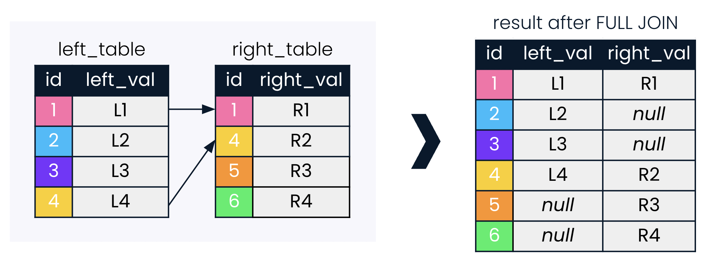
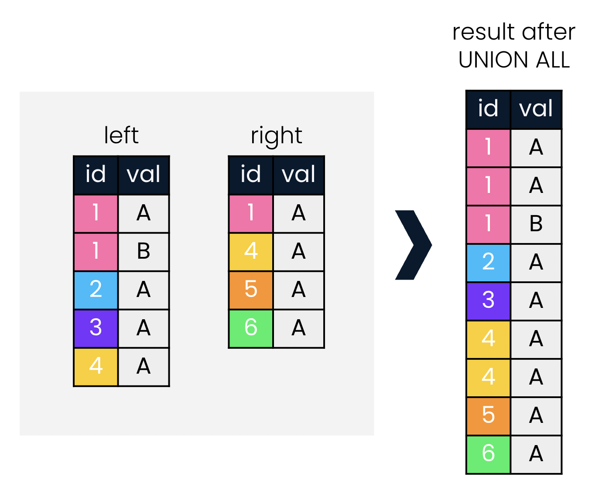
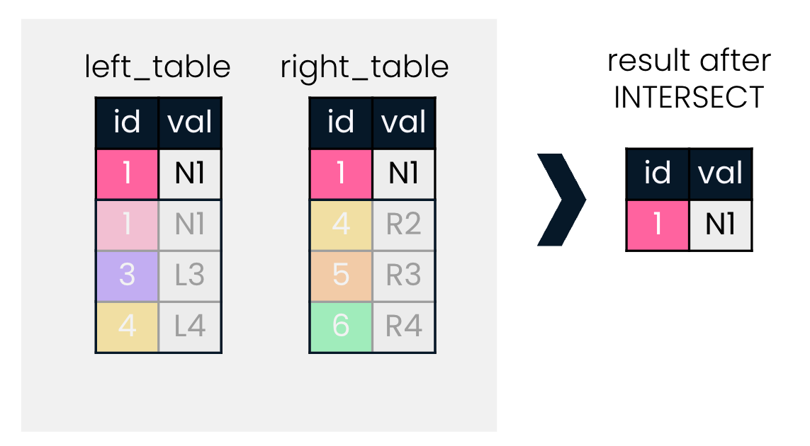
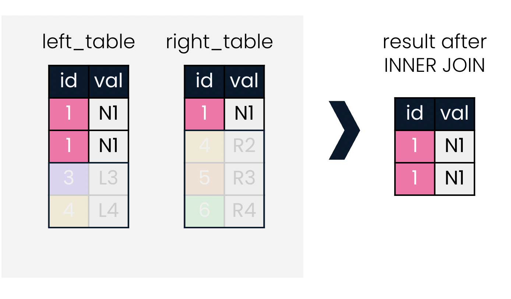
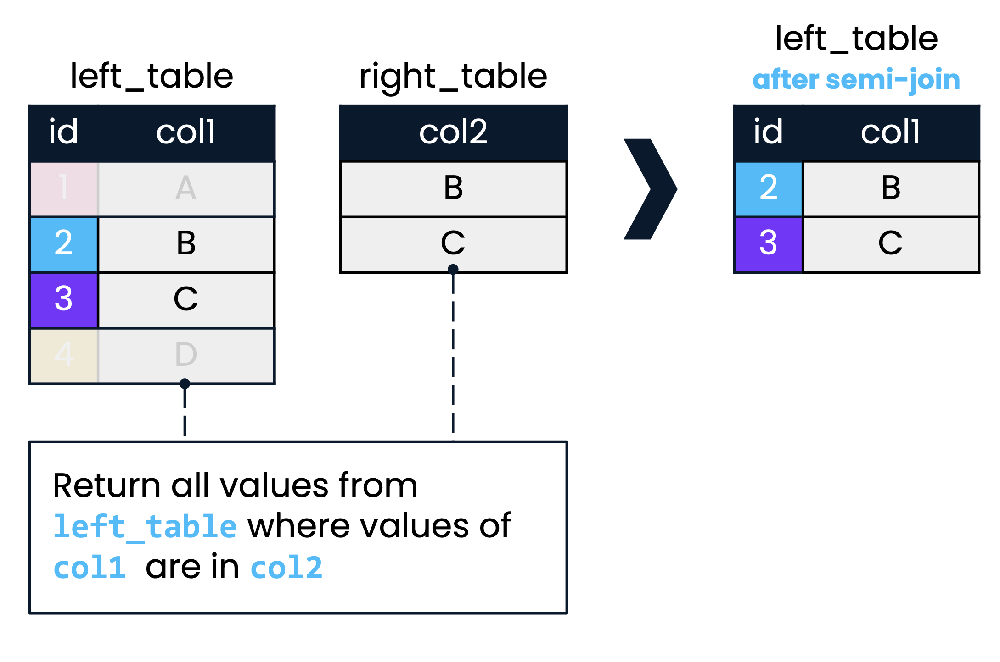
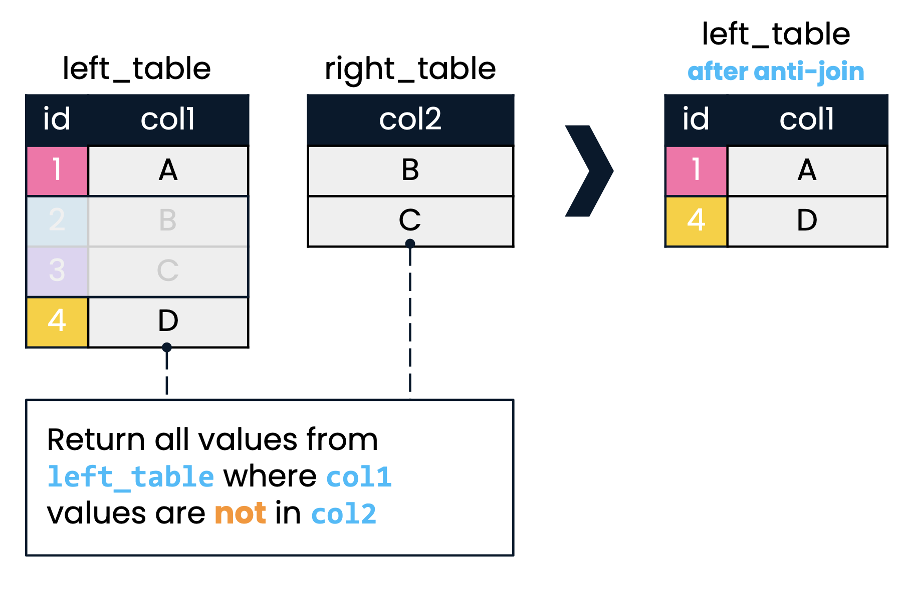

Chapter 25 Joining Data in SQL
25.1 Inner Joins
25.1.1 ins & outs of INNER JOIN

The
table.column_nameformat must be used when selecting columns that exist in both tables.-- Inner join of presidents and prime_ministers, joining on country SELECT prime_ministers.country, prime_ministers.continent, prime_minister, president FROM prime_ministers INNER JOIN presidents ON prime_ministers.country = presidents.country; 👈Aliasing tables, then can use in
SELECTandONclauses.--Inner join of presidents and prime_ministers, joining on country SELECT p1.country, p1.continent, prime_minister, president FROM prime_ministers AS p1 👈 INNER JOIN presidents AS p2 👈 ON p1.country = p2.country;USING: when joining on two identical column names, we can employ
USING(shared_column_name)--Inner join of presidents and prime_ministers, joining on country SELECT p1.country, p1.continent, prime_minister, president FROM prime_ministers AS p1 INNER JOIN presidents AS p2 USING(country); 👈
Setup films database
# Creating a new database
# Connect to the default postgres database
library(DBI)
con <- dbConnect(RSQLite::SQLite(), "")
knitr::opts_chunk$set(connection = "con")
# List database tables
dbListTables(con)## character(0)-- Setup database schema, cities
CREATE TABLE cities (
name VARCHAR PRIMARY KEY,
country_code VARCHAR,
city_proper_pop REAL,
metroarea_pop REAL,
urbanarea_pop REAL
);-- Setup database schema, countries
CREATE TABLE countries (
code VARCHAR PRIMARY KEY,
name VARCHAR,
continent VARCHAR,
region VARCHAR,
surface_area REAL,
indep_year INTEGER,
local_name VARCHAR,
gov_form VARCHAR,
capital VARCHAR,
cap_long REAL,
cap_lat REAL
);-- Setup database schema, languages
CREATE TABLE languages (
lang_id INTEGER PRIMARY KEY,
code VARCHAR,
name VARCHAR,
percent REAL,
official BOOLEAN
);-- Setup database schema, economies
CREATE TABLE economies (
econ_id INTEGER PRIMARY KEY,
code VARCHAR,
year INTEGER,
income_group VARCHAR,
gdp_percapita REAL,
gross_savings REAL,
inflation_rate REAL,
total_investment REAL,
unemployment_rate REAL,
exports REAL,
imports REAL
);-- Setup database schema, currencies
CREATE TABLE currencies (
curr_id INTEGER PRIMARY KEY,
code VARCHAR,
basic_unit VARCHAR,
curr_code VARCHAR,
frac_unit VARCHAR,
frac_perbasic REAL
);-- Setup database schema, populations
CREATE TABLE populations (
pop_id INTEGER PRIMARY KEY,
country_code VARCHAR,
year INTEGER,
fertility_rate REAL,
life_expectancy REAL,
size REAL
);-- Setup database schema, economies2015
CREATE TABLE economies2015 (
code VARCHAR PRIMARY KEY,
year INTEGER,
income_group VARCHAR,
gross_savings REAL
);-- Setup database schema, economies2019
CREATE TABLE economies2019 (
code VARCHAR PRIMARY KEY,
year INTEGER,
income_group VARCHAR,
gross_savings REAL
);-- Setup database schema, eu_countries
CREATE TABLE eu_countries (
code VARCHAR PRIMARY KEY,
name VARCHAR
);# List database tables
dbListTables(con)## [1] "cities" "countries" "currencies" "economies"
## [5] "economies2015" "economies2019" "eu_countries" "languages"
## [9] "populations"# Loading data
cities <- read.csv("data/countries/countries/cities.csv", na.strings = "")
countries <- read.csv("data/countries/countries/countries.csv", na.strings = "")
currencies <- read.csv("data/countries/countries/currencies.csv", na.strings = "")
economies <- read.csv("data/countries/countries/economies.csv", na.strings = "")
economies2015 <- read.csv("data/countries/countries/economies2015.csv", na.strings = "")
economies2019 <- read.csv("data/countries/countries/economies2019.csv", na.strings = "")
eu_countries <- read.csv("data/countries/countries/eu_countries.csv", na.strings = "")
languages <- read.csv("data/countries/countries/languages.csv", na.strings = "")
populations <- read.csv("data/countries/countries/populations.csv", na.strings = "")
# Create database tables
dbWriteTable(con, "cities", cities, overwrite = TRUE)
dbWriteTable(con, "countries", countries, overwrite = TRUE)
dbWriteTable(con, "currencies", currencies, overwrite = TRUE)
dbWriteTable(con, "economies", economies, overwrite = TRUE)
dbWriteTable(con, "economies2015", economies2015, overwrite = TRUE)
dbWriteTable(con, "economies2019", economies2019, overwrite = TRUE)
dbWriteTable(con, "eu_countries", eu_countries, overwrite = TRUE)
dbWriteTable(con, "languages", languages, overwrite = TRUE)
dbWriteTable(con, "populations", populations, overwrite = TRUE)
# List database tables
dbListTables(con)## [1] "cities" "countries" "currencies" "economies"
## [5] "economies2015" "economies2019" "eu_countries" "languages"
## [9] "populations"25.1.1.1 INNER JOIN
You’ll be working with the countries database, which contains information about the most populous world cities in the world, along with country-level economic, population, and geographic data. The database also contains information on languages spoken in each country.
Use the cities and countries tables to build your first inner join.
-- Select all columns from cities
SELECT *
FROM cities;| name | country_code | city_proper_pop | metroarea_pop | urbanarea_pop |
|---|---|---|---|---|
| Abidjan | CIV | 4765000 | NA | 4765000 |
| Abu Dhabi | ARE | 1145000 | NA | 1145000 |
| Abuja | NGA | 1235880 | 6000000 | 1235880 |
| Accra | GHA | 2070463 | 4010054 | 2070463 |
| Addis Ababa | ETH | 3103673 | 4567857 | 3103673 |
| Ahmedabad | IND | 5570585 | NA | 5570585 |
| Alexandria | EGY | 4616625 | NA | 4616625 |
| Algiers | DZA | 3415811 | 5000000 | 3415811 |
| Almaty | KAZ | 1703481 | NA | 1703481 |
| Ankara | TUR | 5271000 | 4585000 | 5271000 |
Perform an inner join with the cities table on the left and the countries table on the right.
SELECT *
FROM cities
-- Inner join to countries
INNER JOIN countries
-- Match on country codes
ON cities.country_code = countries.code;| name | country_code | city_proper_pop | metroarea_pop | urbanarea_pop | code | name | continent | region | surface_area | indep_year | local_name | gov_form | capital | cap_long | cap_lat |
|---|---|---|---|---|---|---|---|---|---|---|---|---|---|---|---|
| Abidjan | CIV | 4765000 | NA | 4765000 | CIV | Cote d’Ivoire | Africa | Western Africa | 322463 | 1960 | Cote d?Ivoire | Republic | Yamoussoukro | -4.030 | 5.33 |
| Abu Dhabi | ARE | 1145000 | NA | 1145000 | ARE | United Arab Emirates | Asia | Middle East | 83600 | 1971 | Al-Imarat al-´Arabiya al-Muttahida | Emirate Federation | Abu Dhabi | 54.370 | 24.48 |
| Abuja | NGA | 1235880 | 6000000 | 1235880 | NGA | Nigeria | Africa | Western Africa | 923768 | 1960 | Nigeria | Federal Republic | Abuja | 7.489 | 9.06 |
| Accra | GHA | 2070463 | 4010054 | 2070463 | GHA | Ghana | Africa | Western Africa | 238533 | 1957 | Ghana | Republic | Accra | -0.208 | 5.57 |
| Addis Ababa | ETH | 3103673 | 4567857 | 3103673 | ETH | Ethiopia | Africa | Eastern Africa | 1104300 | -1000 | YeItyop´iya | Republic | Addis Ababa | 38.747 | 9.02 |
| Ahmedabad | IND | 5570585 | NA | 5570585 | IND | India | Asia | Southern and Central Asia | 3287260 | 1947 | Bharat/India | Federal Republic | New Delhi | 77.225 | 28.64 |
| Alexandria | EGY | 4616625 | NA | 4616625 | EGY | Egypt | Africa | Northern Africa | 1001450 | 1922 | Misr | Republic | Cairo | 31.246 | 30.10 |
| Algiers | DZA | 3415811 | 5000000 | 3415811 | DZA | Algeria | Africa | Northern Africa | 2381740 | 1962 | Al-Jaza?ir/Algerie | Republic | Algiers | 3.051 | 36.74 |
| Almaty | KAZ | 1703481 | NA | 1703481 | KAZ | Kazakhstan | Asia | Southern and Central Asia | 2724900 | 1991 | Qazaqstan | Republic | Astana | 71.438 | 51.19 |
| Ankara | TUR | 5271000 | 4585000 | 5271000 | TUR | Turkey | Asia | Middle East | 774815 | 1923 | Turkiye | Republic | Ankara | 32.361 | 39.72 |
Keep only the name of the city, the name of the country, and the region the country is located in.
-- Select name fields (with alias) and region
SELECT
cities.name AS city,
countries.name AS country,
countries.region
FROM cities
INNER JOIN countries
ON cities.country_code = countries.code;| city | country | region |
|---|---|---|
| Abidjan | Cote d’Ivoire | Western Africa |
| Abu Dhabi | United Arab Emirates | Middle East |
| Abuja | Nigeria | Western Africa |
| Accra | Ghana | Western Africa |
| Addis Ababa | Ethiopia | Eastern Africa |
| Ahmedabad | India | Southern and Central Asia |
| Alexandria | Egypt | Northern Africa |
| Algiers | Algeria | Northern Africa |
| Almaty | Kazakhstan | Southern and Central Asia |
| Ankara | Turkey | Middle East |
25.1.1.2 Joining with aliased tables
You’ll use data from both the countries and economies tables to examine the inflation rate in 2010 and 2015.
-- Select fields with aliases
SELECT
c.code AS country_code,
c.name,
e.year,
e.inflation_rate
FROM countries AS c
-- Join to economies (alias e)
INNER JOIN economies AS e
-- Match on code field using table aliases
ON c.code = e.code;| country_code | name | year | inflation_rate |
|---|---|---|---|
| AFG | Afghanistan | 2010 | 2.179 |
| AFG | Afghanistan | 2015 | -1.549 |
| NLD | Netherlands | 2010 | 0.932 |
| NLD | Netherlands | 2015 | 0.220 |
| ALB | Albania | 2010 | 3.605 |
| ALB | Albania | 2015 | 1.896 |
| DZA | Algeria | 2010 | 3.913 |
| DZA | Algeria | 2015 | 4.784 |
| AGO | Angola | 2010 | 14.480 |
| AGO | Angola | 2015 | 10.287 |
Notice that only the code field is ambiguous, so it requires a table name or alias before it. All the other fields (name, year, and inflation_rate) do not occur in more than one table name, so do not require table names or aliasing in the SELECT statement.
25.1.1.3 USING
When both the field names being joined on are the same, you can take advantage of the USING clause.
SELECT c.name AS country, l.name AS language, official
FROM countries AS c
INNER JOIN languages AS l
-- Match using the code column
USING(code);| country | language | official |
|---|---|---|
| Afghanistan | Dari | 1 |
| Afghanistan | Other | 0 |
| Afghanistan | Pashto | 1 |
| Afghanistan | Turkic | 0 |
| Netherlands | Dutch | 1 |
| Albania | Albanian | 1 |
| Albania | Greek | 0 |
| Albania | Other | 0 |
| Albania | unspecified | 0 |
| Algeria | Arabic | 1 |
It looks like Afghanistan has multiple official and unofficial languages.
25.1.2 Defining relationships
One-to-many relationships

One-to-one relationships

Many-to-many relationships

25.1.2.1 Relationships in our database
What best describes the relationship between
codein thecountriestable andcountry_codein thecitiestable?ANS: one-to-many
Which of these options best describes the relationship between the
countriestable and thelanguagestable?ANS: many-to-many
25.1.2.2 Inspecting a relationship
You’ve just identified that the countries table has a many-to-many relationship with the languages table. That is, many languages can be spoken in a country, and a language can be spoken in many countries.
First, what is the best way to query all the different languages spoken in a country?
Second, how is this different from the best way to query all the countries that speak each language?
Recall that when writing joins, many users prefer to write SQL code out of order by writing the join first (along with any table aliases), and writing the SELECT statement at the end.
-- Select country and language names, aliased
SELECT c.name AS country, l.name AS language
-- From countries (aliased)
FROM countries AS c
-- Join to languages (aliased)
INNER JOIN languages AS l
-- Use code as the joining field with the USING keyword
USING(code)
ORDER BY country;| country | language |
|---|---|
| Afghanistan | Dari |
| Afghanistan | Other |
| Afghanistan | Pashto |
| Afghanistan | Turkic |
| Albania | Albanian |
| Albania | Greek |
| Albania | Other |
| Albania | unspecified |
| Algeria | Arabic |
| Algeria | Berber or Tamazight |
-- Rearrange SELECT statement, keeping aliases
SELECT l.name AS language, c.name AS country
FROM countries AS c
INNER JOIN languages AS l
USING(code)
-- Order the results by language
ORDER BY language;| language | country |
|---|---|
| Afar | Djibouti |
| Afar | Eritrea |
| Afar | Ethiopia |
| Afrikaans | South Africa |
| Afrikaans | Namibia |
| Akyem | Ghana |
| Albanian | Albania |
| Albanian | Macedonia |
| Albanian | Switzerland |
| Alsatian | France |
When we read SQL results, we expect the most important column to be on the far left, and it’s helpful if results are ordered by relevance to the question at hand.
By default, results are ordered by the column from the left table, but you can change this using ORDER BY.
25.1.3 Multiple joins
Chaining joins
SELECT *
FROM left_table
INNER JOIN right_table
ON left_table.id = right_table.id
INNER JOIN another_table
ON left/right_table.id = another_table.id;Joining on multiple keys

SELECT *
FROM left_table
INNER JOIN right_table
-- INNER JOIN ON the id AND date field
ON left_table.id = right_table.id
AND left_table.date = right_table.date;25.1.3.1 Joining multiple tables
Suppose you are interested in the relationship between fertility and unemployment rates. Your task in this exercise is to join tables to return the country name, year, fertility rate, and unemployment rate in a single result from the countries, populations and economies tables.
-- Select relevant fields
SELECT name, year, fertility_rate
-- Inner join countries and populations, aliased, on code
FROM countries AS c
INNER JOIN populations AS p
ON c.code = p.country_code;| name | year | fertility_rate |
|---|---|---|
| Afghanistan | 2010 | 5.75 |
| Afghanistan | 2015 | 4.65 |
| Netherlands | 2010 | 1.79 |
| Netherlands | 2015 | 1.71 |
| Albania | 2010 | 1.66 |
| Albania | 2015 | 1.79 |
| Algeria | 2010 | 2.87 |
| Algeria | 2015 | 2.81 |
| American Samoa | 2010 | NA |
| American Samoa | 2015 | NA |
Chain another inner join to your query with the economies table. Select name, and select year and unemployment_rate from economies.
-- Select fields
SELECT name, e.year, fertility_rate, e.unemployment_rate
FROM countries AS c
INNER JOIN populations AS p
ON c.code = p.country_code
-- Join to economies (as e)
INNER JOIN economies AS e
-- Match on country code
USING(code);| name | year | fertility_rate | unemployment_rate |
|---|---|---|---|
| Afghanistan | 2010 | 4.65 | NA |
| Afghanistan | 2015 | 4.65 | NA |
| Afghanistan | 2010 | 5.75 | NA |
| Afghanistan | 2015 | 5.75 | NA |
| Netherlands | 2010 | 1.71 | 5.00 |
| Netherlands | 2015 | 1.71 | 6.89 |
| Netherlands | 2010 | 1.79 | 5.00 |
| Netherlands | 2015 | 1.79 | 6.89 |
| Albania | 2010 | 1.66 | 14.00 |
| Albania | 2015 | 1.66 | 17.10 |
25.1.3.2 Checking multi-table joins
Have a look at the results for Albania from the previous query below. You can see that the 2015 fertility_rate has been paired with 2010 unemployment_rate, and vice versa.
SELECT name, e.year, fertility_rate, e.unemployment_rate
FROM countries AS c
INNER JOIN populations AS p
ON c.code = p.country_code
-- Join to economies (as e)
INNER JOIN economies AS e
-- Match on country code
USING(code)
WHERE name = 'Albania';| name | year | fertility_rate | unemployment_rate |
|---|---|---|---|
| Albania | 2010 | 1.66 | 14.0 |
| Albania | 2015 | 1.66 | 17.1 |
| Albania | 2010 | 1.79 | 14.0 |
| Albania | 2015 | 1.79 | 17.1 |
Instead of four records, the query should return two: one for each year.
Fix the query by explicitly stating that both the country code and year should match!
SELECT name, e.year, fertility_rate, unemployment_rate
FROM countries AS c
INNER JOIN populations AS p
ON c.code = p.country_code
INNER JOIN economies AS e
ON c.code = e.code
-- Add an additional joining condition such that you are also joining on year
AND p.year = e.year;| name | year | fertility_rate | unemployment_rate |
|---|---|---|---|
| Afghanistan | 2010 | 5.75 | NA |
| Afghanistan | 2015 | 4.65 | NA |
| Netherlands | 2010 | 1.79 | 5.00 |
| Netherlands | 2015 | 1.71 | 6.89 |
| Albania | 2010 | 1.66 | 14.00 |
| Albania | 2015 | 1.79 | 17.10 |
| Algeria | 2010 | 2.87 | 9.96 |
| Algeria | 2015 | 2.81 | 11.21 |
| Angola | 2010 | 6.42 | NA |
| Angola | 2015 | 6.00 | NA |
There are only two lines of Albania results now: one for 2010 and one for 2015.
25.2 Outer, Cross & Self Joins
25.2.1 LEFT & RIGHT JOINs
LEFT JOIN
Return all records in the left table, and those records in the right table that match on the joining field provided.
More intuitive to users when typing from left to right.

RIGHT JOIN
Less commonly used than
LEFT JOINAny
RIGHT JOINcan be re-written as aLEFT JOIN
25.2.1.1 LEFT JOIN
As before, you will be using the cities and countries tables.
You’ll begin with an INNER JOIN with the cities table (left) and countries table (right). This helps if you are interested only in records where a country is present in both tables.
You’ll then change to a LEFT JOIN. This helps if you’re interested in returning all countries in the cities table, whether or not they have a match in the countries table.
SELECT
c1.name AS city,
code,
c2.name AS country,
region,
city_proper_pop
FROM cities AS c1
-- Perform an inner join with cities as c1 and countries as c2 on country code
INNER JOIN countries AS c2
ON c1.country_code = c2.code
ORDER BY code DESC;| city | code | country | region | city_proper_pop |
|---|---|---|---|---|
| Harare | ZWE | Zimbabwe | Eastern Africa | 1606000 |
| Lusaka | ZMB | Zambia | Eastern Africa | 1742979 |
| Cape Town | ZAF | South Africa | Southern Africa | 3740026 |
| Durban | ZAF | South Africa | Southern Africa | 3442361 |
| Ekurhuleni | ZAF | South Africa | Southern Africa | 3178470 |
| Johannesburg | ZAF | South Africa | Southern Africa | 4434827 |
| Sana’a | YEM | Yemen | Middle East | 1937451 |
| Hanoi | VNM | Vietnam | Southeast Asia | 6844100 |
| Ho Chi Minh City | VNM | Vietnam | Southeast Asia | 7681700 |
| Caracas | VEN | Venezuela | South America | 1943901 |
SELECT
c1.name AS city,
code,
c2.name AS country,
region,
city_proper_pop
FROM cities AS c1
-- Join right table (with alias)
LEFT JOIN countries AS c2
ON c1.country_code = c2.code
ORDER BY code DESC;| city | code | country | region | city_proper_pop |
|---|---|---|---|---|
| Harare | ZWE | Zimbabwe | Eastern Africa | 1606000 |
| Lusaka | ZMB | Zambia | Eastern Africa | 1742979 |
| Cape Town | ZAF | South Africa | Southern Africa | 3740026 |
| Durban | ZAF | South Africa | Southern Africa | 3442361 |
| Ekurhuleni | ZAF | South Africa | Southern Africa | 3178470 |
| Johannesburg | ZAF | South Africa | Southern Africa | 4434827 |
| Sana’a | YEM | Yemen | Middle East | 1937451 |
| Hanoi | VNM | Vietnam | Southeast Asia | 6844100 |
| Ho Chi Minh City | VNM | Vietnam | Southeast Asia | 7681700 |
| Caracas | VEN | Venezuela | South America | 1943901 |
Notice that the INNER JOIN resulted in 230 records, whereas the LEFT JOIN returned 236 records.
Remember that the LEFT JOIN is a type of outer join: its result is not limited to only those records that have matches for both tables on the joining field.
Building on your LEFT JOIN
ou will use AVG() in combination with a LEFT JOIN to determine the average gross domestic product (GDP) per capita by region in 2010.
SELECT name, region, gdp_percapita
FROM countries AS c
LEFT JOIN economies AS e
-- Match on code fields
USING(code)
-- Filter for the year 2010
WHERE year = 2010;| name | region | gdp_percapita |
|---|---|---|
| Afghanistan | Southern and Central Asia | 540 |
| Angola | Central Africa | 3599 |
| Albania | Southern Europe | 4098 |
| United Arab Emirates | Middle East | 34629 |
| Argentina | South America | 10413 |
| Armenia | Middle East | 3122 |
| Antigua and Barbuda | Caribbean | 13532 |
| Australia | Australia and New Zealand | 56363 |
| Austria | Western Europe | 46757 |
| Azerbaijan | Middle East | 5847 |
-- Select region, and average gdp_percapita as avg_gdp
SELECT region, AVG(gdp_percapita) AS avg_gdp
FROM countries AS c
LEFT JOIN economies AS e
USING(code)
WHERE year = 2010
-- Group by region
GROUP BY region;| region | avg_gdp |
|---|---|
| Australia and New Zealand | 44792 |
| Baltic Countries | 12631 |
| British Islands | 43588 |
| Caribbean | 11413 |
| Central Africa | 4797 |
| Central America | 4970 |
| Eastern Africa | 1757 |
| Eastern Asia | 24963 |
| Eastern Europe | 10095 |
| Melanesia | 2533 |
SELECT region, AVG(gdp_percapita) AS avg_gdp
FROM countries AS c
LEFT JOIN economies AS e
USING(code)
WHERE year = 2010
GROUP BY region
-- Order by descending avg_gdp
ORDER BY avg_gdp DESC
-- Return only first 10 records
LIMIT 10; | region | avg_gdp |
|---|---|
| Western Europe | 58131 |
| Nordic Countries | 57074 |
| North America | 47912 |
| Australia and New Zealand | 44792 |
| British Islands | 43588 |
| Eastern Asia | 24963 |
| Southern Europe | 22926 |
| Middle East | 18205 |
| Baltic Countries | 12631 |
| Caribbean | 11413 |
25.2.1.2 RIGHT JOIN
-- Modify this query to use RIGHT JOIN instead of LEFT JOIN
SELECT countries.name AS country, languages.name AS language, percent
FROM languages
RIGHT JOIN countries
USING(code)
WHERE language IS NOT NULL
ORDER BY language;| country | language | percent |
|---|---|---|
| Djibouti | Afar | NA |
| Eritrea | Afar | NA |
| Ethiopia | Afar | 1.7 |
| Namibia | Afrikaans | 10.4 |
| South Africa | Afrikaans | 13.5 |
| Ghana | Akyem | 3.2 |
| Albania | Albanian | 98.8 |
| Macedonia | Albanian | 25.1 |
| Switzerland | Albanian | 3.0 |
| France | Alsatian | NA |
This is same as below left join.
-- Modify this query to use LEFT JOIN
SELECT countries.name AS country, languages.name AS language, percent
FROM countries
LEFT JOIN languages
USING(code)
WHERE language IS NOT NULL
ORDER BY language;| country | language | percent |
|---|---|---|
| Djibouti | Afar | NA |
| Eritrea | Afar | NA |
| Ethiopia | Afar | 1.7 |
| Namibia | Afrikaans | 10.4 |
| South Africa | Afrikaans | 13.5 |
| Ghana | Akyem | 3.2 |
| Albania | Albanian | 98.8 |
| Macedonia | Albanian | 25.1 |
| Switzerland | Albanian | 3.0 |
| France | Alsatian | NA |
25.2.2 FULL JOIN
FULL JOIN
A
FULL JOINcombines aLEFT JOINand aRIGHT JOIN.
25.2.2.1 Comparing joins
You’ll examine how results can differ when performing a full join compared to a left join and inner join by joining the countries and currencies tables. You’ll be focusing on the North American region and records where the name of the country is missing.
Begin with a full join with countries on the left and currencies on the right.
Then complete a similar left join and conclude with an inner join, observing the results you see along the way.
FUll JOIN
SELECT name AS country, code, region, basic_unit
FROM countries
-- Join to currencies
FULL JOIN currencies
USING (code)
-- Where region is North America or name is null
WHERE (region = 'North America')
OR (name IS NULL)
ORDER BY region DESC;| country | code | region | basic_unit |
|---|---|---|---|
| Bermuda | BMU | North America | Bermudian dollar |
| Greenland | GRL | North America | NA |
| Canada | CAN | North America | Canadian dollar |
| United States | USA | North America | United States dollar |
| NA | AIA | NA | East Caribbean dollar |
| NA | IOT | NA | United States dollar |
| NA | CCK | NA | Australian dollar |
| NA | COK | NA | New Zealand dollar |
| NA | TMP | NA | United States dollar |
| NA | FLK | NA | Falkland Islands pound |
LEFT JOIN
SELECT name AS country, code, region, basic_unit
FROM countries
-- Join to currencies
LEFT JOIN currencies
USING (code)
WHERE region = 'North America'
OR name IS NULL
ORDER BY region;| country | code | region | basic_unit |
|---|---|---|---|
| Bermuda | BMU | North America | Bermudian dollar |
| Greenland | GRL | North America | NA |
| Canada | CAN | North America | Canadian dollar |
| United States | USA | North America | United States dollar |
INNER JOIN
SELECT name AS country, code, region, basic_unit
FROM countries
-- Join to currencies
INNER JOIN currencies
USING (code)
WHERE region = 'North America'
OR name IS NULL
ORDER BY region;| country | code | region | basic_unit |
|---|---|---|---|
| Bermuda | BMU | North America | Bermudian dollar |
| Canada | CAN | North America | Canadian dollar |
| United States | USA | North America | United States dollar |
The FULL JOIN query returned 18 records, the LEFT JOIN returned 4 records, and the INNER JOIN only returned 3 records.
25.2.2.2 Chaining FULL JOINs
uppose you are doing some research on Melanesia and Micronesia, and are interested in pulling information about languages and currencies into the data we see for these regions in the countries table. Since languages and currencies exist in separate tables, this will require two consecutive full joins involving the countries, languages and currencies tables.
SELECT
c1.name AS country,
region,
l.name AS language,
basic_unit,
frac_unit
FROM countries as c1
-- Full join with languages (alias as l)
FULL JOIN languages AS l
USING(code)
-- Full join with currencies (alias as c2)
FULL JOIN currencies AS c2
USING(code)
WHERE region LIKE 'M%esia';| country | region | language | basic_unit | frac_unit |
|---|---|---|---|---|
| Fiji Islands | Melanesia | NA | NA | NA |
| Guam | Micronesia | English | NA | NA |
| Guam | Micronesia | Filipino | NA | NA |
| Guam | Micronesia | Chamorro | NA | NA |
| Guam | Micronesia | Other Pacific Islander | NA | NA |
| Guam | Micronesia | Asian | NA | NA |
| Guam | Micronesia | Other | NA | NA |
| Kiribati | Micronesia | Kiribati | Australian dollar | Cent |
| Kiribati | Micronesia | English | Australian dollar | Cent |
| Marshall Islands | Micronesia | Marshallese | United States dollar | Cent |
The first FULL JOIN in the query pulled countries and languages, and the second FULL JOIN added in currency data for each record in the result of the first FULL JOIN.
25.2.3 CROSS JOIN
creates all possible combinations of two tables.

SELECT id1, id2
FROM table1
CROSS JOIN table2;Histories and languages
CROSS JOIN can be incredibly helpful when asking questions that involve looking at all possible combinations or pairings between two sets of data.
Imagine you are a researcher interested in the languages spoken in two countries: Pakistan and India. You are interested in asking:
What are the languages presently spoken in the two countries?
Given the shared history between the two countries, what languages could potentially have been spoken in either country over the course of their history?
Explore how INNER JOIN and CROSS JOIN can help answer these two questions, respectively.
SELECT c.name AS country, l.name AS language
-- Inner join countries as c with languages as l on code
FROM countries AS c
INNER JOIN languages AS l
USING(code)
WHERE c.code IN ('PAK','IND')
AND l.code in ('PAK','IND');| country | language |
|---|---|
| India | Assamese |
| India | Bengali |
| India | Gujarati |
| India | Hindi |
| India | Kannada |
| India | Maithili |
| India | Malayalam |
| India | Marathi |
| India | Oriya |
| India | Other |
Look at possible combinations of languages that could have been spoken in the two countries given their history.
SELECT c.name AS country, l.name AS language
FROM countries AS c
-- Perform a cross join to languages (alias as l)
CROSS JOIN languages AS l
WHERE c.code in ('PAK','IND')
AND l.code in ('PAK','IND');| country | language |
|---|---|
| India | Hindi |
| India | Bengali |
| India | Telugu |
| India | Marathi |
| India | Tamil |
| India | Urdu |
| India | Gujarati |
| India | Kannada |
| India | Malayalam |
| India | Oriya |
Notice that the INNER JOIN returned 25 records, whereas the CROSS JOIN returned 50 records, as it took all combinations of languages returned by the INNER JOIN for both countries. (25*2=50)
Choosing your join
Determine the names of the five countries and their respective regions with the lowest life expectancy for the year 2010.
SELECT
c.name AS country,
region,
life_expectancy AS life_exp
FROM countries AS c
-- Join to populations (alias as p) using an appropriate join
FULL JOIN populations AS p
ON c.code = p.country_code
-- Filter for only results in the year 2010
WHERE year = 2010 AND life_exp IS NOT NULL
-- Sort by life_exp
ORDER BY life_exp
-- Limit to five records
LIMIT 5;| country | region | life_exp |
|---|---|---|
| Lesotho | Southern Africa | 47.5 |
| Central African Republic | Central Africa | 47.6 |
| Sierra Leone | Western Africa | 48.2 |
| Swaziland | Southern Africa | 48.3 |
| Zimbabwe | Eastern Africa | 49.6 |
Notice that all four types of joins we have learned will return the same result.
25.2.4 Self joins
Self joins are tables joined with themselves
They can be used to compare parts of the same table
Comparing a country to itself
Suppose you are interested in finding out how much the populations for each country changed from 2010 to 2015. You can visualize this change by performing a self join.
Since you’ll be joining the populations table to itself, you can alias populations first as p1 and again as p2. This is good practice whenever you are aliasing tables with the same first letter.
-- Select aliased fields from populations as p1
SELECT
p1.country_code,
p1.size AS size2010,
p2.size AS size2015
FROM populations AS p1
-- Join populations as p1 to itself, alias as p2, on country code
INNER JOIN populations AS p2
ON p1.country_code = p2.country_code| country_code | size2010 | size2015 |
|---|---|---|
| ABW | 101597 | 101597 |
| ABW | 101597 | 103889 |
| ABW | 103889 | 101597 |
| ABW | 103889 | 103889 |
| AFG | 27962207 | 27962207 |
| AFG | 27962207 | 32526562 |
| AFG | 32526562 | 27962207 |
| AFG | 32526562 | 32526562 |
| AGO | 21219954 | 21219954 |
| AGO | 21219954 | 25021974 |
Since you want to compare records from 2010 and 2015, eliminate unwanted records by extending the WHERE statement to include only records where the p1.year matches p2.year - 5.
SELECT
p1.country_code,
p1.size AS size2010,
p2.size AS size2015
FROM populations AS p1
INNER JOIN populations AS p2
ON p1.country_code = p2.country_code
WHERE p1.year = 2010
-- Filter such that p1.year is always five years before p2.year
AND (p2.year = 2015);| country_code | size2010 | size2015 |
|---|---|---|
| ABW | 101597 | 103889 |
| AFG | 27962207 | 32526562 |
| AGO | 21219954 | 25021974 |
| ALB | 2913021 | 2889167 |
| AND | 84419 | 70473 |
| ARE | 8329453 | 9156963 |
| ARG | 41222875 | 43416755 |
| ARM | 2963496 | 3017712 |
| ASM | 55636 | 55538 |
| ATG | 87233 | 91818 |
All joins on deck

25.3 Set Theory for SQL Joins
Venn diagrams and set theory

25.3.1 UNION vs. UNION ALL
UNIONtakes two tables as input, and returns all records from both tables, excluding duplicatesSELECT * FROM left_table UNION SELECT * FROM right_table;
UNION ALLtakes two tables and returns all records from both tables, including duplicatesSELECT * FROM left_table UNION ALL SELECT * FROM right_table;
UNION and UNION ALL syntax
Both queries on the left and right of the set operation must have the same data types. The names of the fields do not need to be the same, as the result will always contain field names from the left query.

Two tables, languages and currencies:
SELECT code
FROM languages
UNION
SELECT curr_id
FROM currencies;❌A SQL error, because languages and currencies do not have the same number of fields.
SELECT code
FROM languages
UNION
SELECT curr_id
FROM currencies;❌A SQL error, because code and curr_id are not of the same data type.
SELECT code FROM
languages
UNION ALL
SELECT code FROM
currencies;| code |
|---|
| AFG |
| AFG |
| AFG |
| AFG |
| ALB |
| ALB |
| ALB |
| ALB |
| DZA |
| DZA |
⭕An unordered list of each country code in languages and currencies, including duplicates.
Comparing global economies
In this exercise, you have two tables, economies2015 and economies2019, available to you under the tabs in the console. You’ll perform a set operation to stack all records in these two tables on top of each other, excluding duplicates.
When drafting queries containing set operations, it is often helpful to write the queries on either side of the operation first, and then call the set operator.
-- Select all fields from economies2015
SELECT *
FROM economies2015
-- Set operation
UNION
-- Select all fields from economies2019
SELECT *
FROM economies2019
ORDER BY code, year;| code | year | income_group | gross_savings |
|---|---|---|---|
| ABW | 2015 | High income | 14.87 |
| AGO | 2015 | Lower middle income | 25.02 |
| AGO | 2019 | Lower middle income | 25.52 |
| ALB | 2015 | Upper middle income | 16.86 |
| ALB | 2019 | Upper middle income | 14.50 |
| ARG | 2015 | Upper middle income | 14.29 |
| ARG | 2019 | Upper middle income | 14.29 |
| ARM | 2015 | Upper middle income | 18.43 |
| ARM | 2019 | Upper middle income | 9.82 |
| ATG | 2015 | High income | 7.05 |
UNION can be helpful for consolidating data from multiple tables into one result, which as you have seen, can then be ordered in meaningful ways.
Comparing two set operations
In this exercise, you will looking at cases for when UNION is appropriate compared to UNION ALL.
You will be looking at combinations of country code and year from the economies and populations tables.
-- Query that determines all pairs of code and year from economies and populations, without duplicates
SELECT code, year
FROM economies
UNION
SELECT country_code, year
FROM populations
ORDER BY code, year;| code | year |
|---|---|
| ABW | 2010 |
| ABW | 2015 |
| AFG | 2010 |
| AFG | 2015 |
| AGO | 2010 |
| AGO | 2015 |
| ALB | 2010 |
| ALB | 2015 |
| AND | 2010 |
| AND | 2015 |
-- Amend the query to return all combinations (including duplicates)
SELECT code, year
FROM economies
-- Set theory clause
UNION ALL
SELECT country_code, year
FROM populations
ORDER BY code, year;| code | year |
|---|---|
| ABW | 2010 |
| ABW | 2015 |
| AFG | 2010 |
| AFG | 2010 |
| AFG | 2015 |
| AFG | 2015 |
| AGO | 2010 |
| AGO | 2010 |
| AGO | 2015 |
| AGO | 2015 |
UNION returned 434 records, whereas UNION ALL returned 814. Are you able to spot the duplicates in the UNION ALL?
25.3.2 INTERSECT
INTERSECTis a robust set operation for finding the set of identical records between two sets of records.

INTERSECT vs. INNER JOIN on two columns
| INTERSECT | INNER JOIN |
|---|---|
|
|
|  | |
| removes duplicates | return duplicates, if id is duplicated in either table |
return NULL |
never return NULL |
| A set-based operator that compares complete rows between two sets and can never return more rows than in the smaller table. | An operator that generally matches on a limited set of columns and can return zero rows or more rows from either table. |
Let’s say you are interested in those countries that share names with cities. Return all city names that are also country names.
-- Return all cities with the same name as a country
SELECT name
FROM cities
INTERSECT
SELECT name
FROM countries;| name |
|---|
| Singapore |
It looks as though Singapore is the only country in our database that has a city with the same name!
25.3.3 EXCEPT
EXCEPTretains only records from the left table that are not present in the right table
Find the names of cities that do not have the same names as their countries.
-- Return all cities that do not have the same name as a country
SELECT name
FROM cities
EXCEPT
SELECT name
FROM countries
ORDER BY name;| name |
|---|
| Abidjan |
| Abu Dhabi |
| Abuja |
| Accra |
| Addis Ababa |
| Ahmedabad |
| Alexandria |
| Algiers |
| Almaty |
| Ankara |
Note that if countries had been on the left and cities on the right, you would have returned the opposite: all countries that do not have the same name as a city.
SELECT name
FROM countries
EXCEPT
SELECT name
FROM cities
ORDER BY name;| name |
|---|
| Afghanistan |
| Albania |
| Algeria |
| American Samoa |
| Andorra |
| Angola |
| Antigua and Barbuda |
| Argentina |
| Armenia |
| Aruba |
Calling all set operators

25.4 Subqueries
25.4.1 With semi joins & anti joins
Additive joins

The six joins we’ve worked with so far are all “additive” in that they add columns to the original “left” table.
INNER JOINLEFT JOINRIGHT JOINFULL JOINCROSS JOINSelf joins
None additive joins
| Semi join | Anti join |
| Chooses records in the first table where a condition is met in the second table. | Chooses records in the first table where a condition is NOT met in the second table. |
|  |  |
|
|
25.4.1.1 Semi join
Let’s say you are interested in identifying languages spoken in the Middle East. The languages table contains information about languages and countries, but it does not tell you what region the countries belong to. You can build up a semi join by filtering the countries table by a particular region, and then using this to further filter the languages table.
-- Select country code for countries in the Middle East
SELECT code
FROM countries
WHERE region = 'Middle East';| code |
|---|
| ARE |
| ARM |
| AZE |
| BHR |
| GEO |
| IRQ |
| ISR |
| YEM |
| JOR |
| KWT |
-- Select unique language names
SELECT DISTINCT name
FROM languages
-- Order by the name of the language
ORDER BY name;| name |
|---|
| Afar |
| Afrikaans |
| Akyem |
| Albanian |
| Alsatian |
| Amerindian |
| Amharic |
| Angolar |
| Antiguan creole |
| Arabic |
Create a semi join out of the two queries you’ve written, which filters unique languages returned in the first query for only those languages spoken in the 'Middle East'.
SELECT DISTINCT name
FROM languages
-- Add syntax to use bracketed subquery below as a filter
WHERE code IN
(SELECT code
FROM countries
WHERE region = 'Middle East')
ORDER BY name;| name |
|---|
| Arabic |
| Aramaic |
| Armenian |
| Azerbaijani |
| Azeri |
| Baluchi |
| Bulgarian |
| Circassian |
| English |
| Farsi |
25.4.1.2 Anti join
The anti join is a related and powerful joining tool. It can be particularly useful for identifying whether an incorrect number of records appears in a join.
Say you are interested in identifying currencies of Oceanian countries.
You have written the following INNER JOIN, which returns 15 records.
SELECT c1.code, name, basic_unit AS currency
FROM countries AS c1
INNER JOIN currencies AS c2
ON c1.code = c2.code
WHERE c1.continent = 'Oceania';| code | name | currency |
|---|---|---|
| AUS | Australia | Australian dollar |
| KIR | Kiribati | Australian dollar |
| MHL | Marshall Islands | United States dollar |
| NRU | Nauru | Australian dollar |
| PLW | Palau | United States dollar |
| PNG | Papua New Guinea | Papua New Guinean kina |
| PYF | French Polynesia | CFP franc |
| SLB | Solomon Islands | Solomon Islands dollar |
| WSM | Samoa | Samoan tala |
| TON | Tonga | Tongan paʻanga |
- Now, you want to ensure that all Oceanian countries from the countries table are included in this result.
-- Select code and name of countries from Oceania
SELECT code, name
FROM countries
WHERE continent = 'Oceania';| code | name |
|---|---|
| ASM | American Samoa |
| AUS | Australia |
| FJI | Fiji Islands |
| GUM | Guam |
| KIR | Kiribati |
| MHL | Marshall Islands |
| FSM | Micronesia, Federated States of |
| NRU | Nauru |
| PLW | Palau |
| PNG | Papua New Guinea |
There’re 19 records.
- If there are any Oceanian countries excluded in this INNER JOIN, you want to return the names of these countries.
SELECT code, name
FROM countries
WHERE continent = 'Oceania'
-- Filter for countries not included in the bracketed subquery
AND code NOT IN
(SELECT code
FROM currencies);| code | name |
|---|---|
| ASM | American Samoa |
| FJI | Fiji Islands |
| GUM | Guam |
| FSM | Micronesia, Federated States of |
| MNP | Northern Mariana Islands |
Anti join determined which five out of 19 countries that were not included in the INNER JOIN provided.
25.4.2 Inside WHERE & SELECT
Syntax for subqueries inside WHERE
All semi joins and anti joins we have seen included a subequery in
WHEREWHEREis the most common place for subqueries-- example SELECT * FROM some_table WHERE some_field IN (SELECT some_numeric_field FROM another_table WHERE field2 = some_condition);
Subqueries inside SELECT
-- example
SELECT DISTINCT continent,
(SELECT COUNT(*)
FROM monarchs
WHERE states.continent = monarch.continent) AS monarch_count
FROM states;25.4.2.1 Subquery inside WHERE
In this exercise, you will nest a subquery from the populations table inside another query from the same table, populations.
Your goal is to figure out which countries had high average life expectancies in 2015. Suppose you only want records from 2015 with life_expectancy above 1.15 * avg_life_expectancy.
SELECT *
FROM populations
WHERE life_expectancy > 1.15 * avg_life_expectancy
AND year = 2015;- Write a query to calculate a value for
avg_life_expectancy.
-- Select average life_expectancy from the populations table
SELECT AVG(life_expectancy)
FROM populations
-- Filter for the year 2015
WHERE year = 2015;| AVG(life_expectancy) |
|---|
| 71.7 |
- Nest this calculation into another query.
SELECT *
FROM populations
-- Filter for only those populations where life expectancy is 1.15 times higher than average
WHERE life_expectancy > 1.15 *
(SELECT AVG(life_expectancy)
FROM populations
WHERE year = 2015)
AND year = 2015;| pop_id | country_code | year | fertility_rate | life_expectancy | size |
|---|---|---|---|---|---|
| 21 | AUS | 2015 | 1.83 | 82.5 | 23789752 |
| 376 | CHE | 2015 | 1.54 | 83.2 | 8281430 |
| 356 | ESP | 2015 | 1.32 | 83.4 | 46443994 |
| 134 | FRA | 2015 | 2.01 | 82.7 | 66538391 |
| 170 | HKG | 2015 | 1.20 | 84.3 | 7305700 |
| 174 | ISL | 2015 | 1.93 | 82.9 | 330815 |
| 190 | ITA | 2015 | 1.37 | 83.5 | 60730582 |
| 194 | JPN | 2015 | 1.46 | 83.8 | 126958472 |
| 340 | SGP | 2015 | 1.24 | 82.6 | 5535002 |
| 374 | SWE | 2015 | 1.88 | 82.6 | 9799186 |
Many of these country codes as being relatively wealthy countries, which makes sense as we might expect life expectancy to be higher in wealthier nations.
WHERE do people live?
Identifying capital cities in order of largest to smallest population. Get the urban area population for capital cities only.
-- Select relevant fields from cities table
SELECT name, country_code, urbanarea_pop
FROM cities
-- Filter using a subquery on the countries table
WHERE name IN
(SELECT capital FROM countries)
ORDER BY urbanarea_pop DESC;| name | country_code | urbanarea_pop |
|---|---|---|
| Beijing | CHN | 21516000 |
| Dhaka | BGD | 14543124 |
| Tokyo | JPN | 13513734 |
| Moscow | RUS | 12197596 |
| Cairo | EGY | 10230350 |
| Kinshasa | COD | 10130000 |
| Jakarta | IDN | 10075310 |
| Seoul | KOR | 9995784 |
| Mexico City | MEX | 8974724 |
| Lima | PER | 8852000 |
25.4.2.2 Subquery inside SELECT
- Begin with a
LEFT JOINcombined with aGROUP BYto select the nine countries with the most cities appearing in the cities table, along with the counts of these cities.
-- Find top nine countries with the most cities
SELECT countries.name AS country, COUNT(cities.name) AS cities_num
FROM countries
LEFT JOIN cities
ON countries.code = cities.country_code
GROUP BY countries.name
-- Order by count of cities as cities_num
ORDER BY cities_num DESC, country ASC
LIMIT 9;| country | cities_num |
|---|---|
| China | 36 |
| India | 18 |
| Japan | 11 |
| Brazil | 10 |
| Pakistan | 9 |
| United States | 9 |
| Indonesia | 7 |
| Russian Federation | 7 |
| South Korea | 7 |
- Write a query that returns the same result as the join, but leveraging a nested query instead.
SELECT countries.name AS country,
-- Subquery that provides the count of cities
(SELECT COUNT(*)
FROM cities
WHERE cities.country_code = countries.code) AS cities_num
FROM countries
ORDER BY cities_num DESC, country
LIMIT 9;| country | cities_num |
|---|---|
| China | 36 |
| India | 18 |
| Japan | 11 |
| Brazil | 10 |
| Pakistan | 9 |
| United States | 9 |
| Indonesia | 7 |
| Russian Federation | 7 |
| South Korea | 7 |
Notice how the subquery involves only one additional step in your SELECT statement, whereas the JOIN and GROUP BY are a two-step process.
25.4.3 Inside FROM
- Include a subquery as a temporary table in
FROMclause and thenSELECTfrom it.
25.4.3.1 Subquery inside FROM
Subqueries inside FROM can help select columns from multiple tables in a single query.
Say you are interested in determining the number of languages spoken for each country. You want to present this information alongside each country’s local_name, which is a field only present in the countries table and not in the languages table. Use a subquery inside FROM to bring information from these two tables together.
-- Select code, and language count as lang_num = sub
SELECT code, COUNT(name) AS lang_num
FROM languages
GROUP BY code;| code | lang_num |
|---|---|
| ABW | 7 |
| AFG | 4 |
| AGO | 12 |
| AIA | 1 |
| ALB | 4 |
| AND | 4 |
| ARE | 5 |
| ARG | 6 |
| ARM | 3 |
| ASM | 5 |
-- Select local_name and lang_num from appropriate tables
SELECT countries.local_name, sub.lang_num
FROM countries,
(SELECT code, COUNT(*) AS lang_num
FROM languages
GROUP BY code) AS sub
-- Where codes match, only present in the countries and not in the languages
WHERE countries.code = sub.code
ORDER BY lang_num DESC;| local_name | lang_num |
|---|---|
| Zambia | 19 |
| YeItyop´iya | 16 |
| Zimbabwe | 16 |
| Bharat/India | 14 |
| Nepal | 14 |
| South Africa | 13 |
| Mali | 13 |
| France | 13 |
| Angola | 12 |
| Malawi | 12 |
25.4.3.2 Subquery challenge
Suppose you’re interested in analyzing inflation and unemployment rate for certain countries in 2015. You are not interested in countries with "Republic" or "Monarchy" as their form of government, but are interested in all other forms of government, such as emirate federations, socialist states, and commonwealths.
You will use the field gov_form to filter for these two conditions, which represents a country’s form of government.
-- Select relevant fields
SELECT code, inflation_rate, unemployment_rate
FROM economies
WHERE year = 2015
-- Anti join
AND code NOT IN
-- Subquery returning country codes filtered on gov_form
(SELECT code
FROM countries
-- Filter which do not contain the words "Republic" or "Monarchy" in gov_form.
WHERE gov_form LIKE '%Republic%'
OR gov_form LIKE '%Monarchy%')
ORDER BY inflation_rate DESC;| code | inflation_rate | unemployment_rate |
|---|---|---|
| SSD | 52.813 | NA |
| LBY | 9.839 | NA |
| MAC | 4.564 | 1.82 |
| ARE | 4.070 | NA |
| HKG | 3.037 | 3.30 |
| SRB | 1.392 | 18.20 |
| MNE | 1.204 | NA |
| TLS | 0.553 | NA |
| ROU | -0.596 | 6.81 |
| PRI | -0.751 | 12.00 |
In 2015, South Sudan (with country code SSD) had inflation above 50%!
25.4.3.3 Final challenge
Your task is to determine the top 10 capital cities in Europe and the Americas by city_perc, a metric you’ll calculate. city_perc is a percentage that calculates the “proper” population in a city as a percentage of the total population in the wider metro area, as follows:
city_proper_pop / metroarea_pop * 100
Do not use table aliasing in this exercise.
-- Select fields from cities
SELECT
name, country_code, city_proper_pop, metroarea_pop,
-- avoid integer dived by integer return integer, so multiple 1.0
((city_proper_pop * 1.0) / (metroarea_pop * 1.0) * 100) AS city_perc
FROM cities
-- Use subquery to filter city name, capital cities in Europe and Americas
WHERE name IN
(SELECT capital
FROM countries
WHERE continent LIKE 'Europe'
OR continent LIKE '%America') -- with 'America' at the end of name
-- Add filter condition such that metroarea_pop does not have null values
AND (metroarea_pop IS NOT NULL)
-- Sort and limit the result
ORDER BY city_perc DESC
LIMIT 10;| name | country_code | city_proper_pop | metroarea_pop | city_perc |
|---|---|---|---|---|
| Lima | PER | 8852000 | 10750000 | 82.3 |
| Bogota | COL | 7878783 | 9800000 | 80.4 |
| Moscow | RUS | 12197596 | 16170000 | 75.4 |
| Vienna | AUT | 1863881 | 2600000 | 71.7 |
| Montevideo | URY | 1305082 | 1947604 | 67.0 |
| Caracas | VEN | 1943901 | 2923959 | 66.5 |
| Rome | ITA | 2877215 | 4353775 | 66.1 |
| Brasilia | BRA | 2556149 | 3919864 | 65.2 |
| London | GBR | 8673713 | 13879757 | 62.5 |
| Budapest | HUN | 1759407 | 2927944 | 60.1 |
Lima has the highest percentage of people living in the city ‘proper’, relative to the wider metropolitan population.
# disconnect the sql connection
dbDisconnect(con)